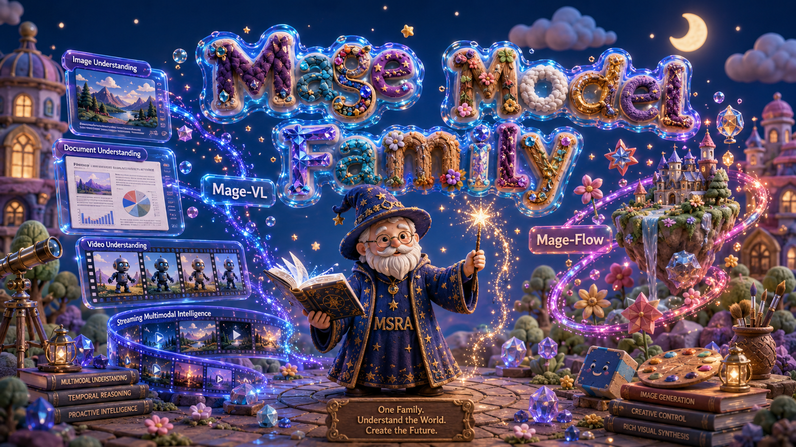

Mage is a family of lightweight, research-friendly multimodal models built at a fixed 4B-parameter budget, sharing a codec-aligned efficiency philosophy — spend representation capacity where the signal is — across both visual understanding and generation. Both models are compact enough to train, fine-tune, and deploy on modest hardware, yet remain competitive with much larger open systems.